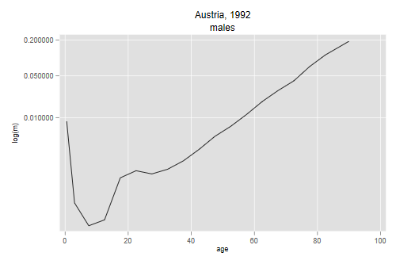
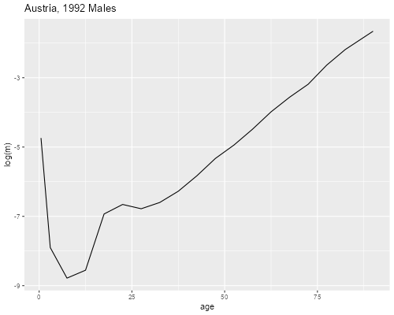

<h2 id="period-life-table-construction">Period Life Table
Construction</h2>
<p>Here’s how to reproduce the calculations in Box 3.1 of Preston et a.
(p. 49) using your statistical package as a calculator. First read the
data and compute the width of each age interval.</p>

{% include srtabs.html %}

<pre class='stata'>. infile age N D using ///
>   https://grodri.github.io/datasets/preston31.dat, clear
(19 observations read)

. gen n =  age[_n+1] - age // leaves width of last interval missing
(1 missing value generated)

. replace n = 0 in -1
(1 real change made)
</pre>
<pre class='r'>> library(dplyr)
> b31 &lt;- read.table("https://grodri.github.io/datasets/preston31.dat",
+   col.names = c("age", "N", "D"))
> b31 &lt;- mutate(b31, n = c(diff(age), 0))
</pre>
<p>The calculations are pretty straightforward. The numbers below refer
to the numbered steps in the textbook. <span class="stata">To ensure
full precision I use doubles; floats are good for only about 7 digits,
and this can be a problem with large numbers such as
<em><sub>n</sub>L<sub>x</sub></em>.</span></p>
<p><strong>1</strong>. Compute death rates dividing events by
exposure.</p>
<pre class='stata'>. gen m = D/N
</pre>
<pre class='r'>> b31 &lt;- mutate(b31, m = D/N)
</pre>
<p><strong>2</strong>. Next we need the time lived by deaths
<em><sub>a</sub>n<sub>x</sub></em>. Preston et al. borrow these values
for ages 5 to 75 from Keyfitz and Flieger (1971), p.21. I saved those
values in a Stata file so I can easily merge them here.</p>
<pre class='stata'>. sort age

. merge 1:1 age using https://grodri.github.io/datasets/kfnax

    Result                      Number of obs
    ─────────────────────────────────────────
    Not matched                             0
    Matched                                19  (_merge==3)
    ─────────────────────────────────────────
</pre>
<pre class='r'>> library(haven)
> kfnax &lt;- read_dta("https://grodri.github.io/datasets/kfnax.dta")
> b31 &lt;- inner_join(b31, kfnax, by="age")
</pre>
<p>The factors for ages 0-1 and 1-4 are based on the Coale-Demeny
equations under age 5, which depends on the mortality rate at age 0. The
value for the last age is not used, but we replace it to avoid
confusion.</p>
<pre class='stata'>. rename nax a // for simplicity

. replace a = cond(m[1] >= 0.107, 0.330, 0.045 + 2.684 * m[1]) in 1
(1 real change made)

. replace a = cond(m[1] >= 0.107, 1.352, 1.651 - 2.816 * m[1]) in 2
(1 real change made)

. replace a = 0 in -1
(1 real change made)
</pre>
<pre class='r'>> b31 &lt;- rename(b31, a = nax)  # for simplicity
> cond &lt;- rep(b31[1,"m"] >= 0.107, 2) # condition must be a vector here
> b31[1:2,"a"] &lt;- ifelse(cond, c(0.330, 1.352) ,
+   b31[1:2,"a"] &lt;- c(0.045, 1.651) + c(2.684, -2.816)* b31[1,"m"])
> last &lt;- nrow(b31)
> b31[last,"a"] &lt;- 1/ b31[last,"m"]
</pre>
<p><strong>3</strong>. Convert the death rates to probabilities using
the <em><sub>a</sub>n<sub>x</sub></em> factors, and<br/>
<strong>4</strong>. Compute conditional survival probabilities as the
complements</p>
<pre class='stata'>. gen double q = n * m/(1 + (n - a)*m)

. replace q = 1 in -1
(1 real change made)

. gen double p = 1 - q
</pre>
<pre class='r'>> b31 &lt;- mutate(b31, q = n * m/(1 + (n - a) * m), p = 1 - q)
> b31[last, c("q","p")] = c(1, 0)
</pre>
<p><strong>5</strong>. Generate the survival function starting with a
radix of 100,000. Note that each value of <em>l<sub>x</sub></em> depends
on the previous value</p>
<pre class='stata'>. gen double lx = 100000 in 1
(18 missing values generated)

. quietly replace lx = lx[_n-1] * p[_n-1] in 2/-1
</pre>
<pre class='r'>> b31 &lt;- mutate(b31, lx = 100000 * cumprod( c(1, p[-last])))
</pre>
<p><strong>6</strong>. Compute deaths by differencing the survival
function and noting that in the end everyone dies</p>
<pre class='stata'>. generate d = lx - lx[_n + 1]
(1 missing value generated)

. replace d = lx in -1
(1 real change made)
</pre>
<pre class='r'>> b31 &lt;- mutate(b31, d = c(-diff(lx), lx[last]))
</pre>
<p><strong>7</strong>. Calculate person-years lived in each age group,
which is <em>n</em> for those who survive the age group and
<em><sub>a</sub>n<sub>x</sub></em> for those who die, and<br/>
<strong>8</strong>. Accumulate from the bottom up, which we do
subtracting a running sum from the total</p>
<pre class='stata'>. gen double L = n * lx[_n+1] + a * d // not to be confused with D
(1 missing value generated)

. replace L = lx/m in -1
(1 real change made)

. quietly summarize L // to gen the sum

. gen double T = r(sum) - sum(L) + L
</pre>
<pre class='r'>> b31 &lt;- mutate(b31, L =  (lx - d) * n +  d * a,
+   T = sum(L) - cumsum(L) + L)
</pre>
<p><strong>9</strong>. Finally calculate expectation of life by dividing
the time lived after each age by the survivors at the beginning of the
age</p>
<pre class='stata'>. gen e = T/lx
</pre>
<pre class='r'>> b31 &lt;- mutate(b31, e = T/lx)
</pre>
<p>And we are ready to print out results in two parts to match the
textbook. <span class="stata">We use a few formats to get an exact
replica</span></p>
<pre class='stata'>. format %6.3f a e

. format %8.6f m q p

. format %9.0fc N D lx d L T

. format %8.6f m q p

. list age N D m a q p

     ┌────────────────────────────────────────────────────────────────┐
     │ age         N       D          m       a          q          p │
     ├────────────────────────────────────────────────────────────────┤
  1. │   0    47,925     419   0.008743   0.068   0.008672   0.991328 │
  2. │   1   189,127      70   0.000370   1.626   0.001479   0.998521 │
  3. │   5   234,793      36   0.000153   2.500   0.000766   0.999234 │
  4. │  10   238,790      46   0.000193   3.143   0.000963   0.999037 │
  5. │  15   254,996     249   0.000976   2.724   0.004872   0.995128 │
     ├────────────────────────────────────────────────────────────────┤
  6. │  20   326,831     420   0.001285   2.520   0.006405   0.993595 │
  7. │  25   355,086     403   0.001135   2.481   0.005659   0.994341 │
  8. │  30   324,222     441   0.001360   2.601   0.006779   0.993221 │
  9. │  35   269,963     508   0.001882   2.701   0.009368   0.990632 │
 10. │  40   261,971     769   0.002935   2.663   0.014577   0.985423 │
     ├────────────────────────────────────────────────────────────────┤
 11. │  45   238,011   1,154   0.004849   2.698   0.023975   0.976025 │
 12. │  50   261,612   1,866   0.007133   2.676   0.035082   0.964918 │
 13. │  55   181,385   2,043   0.011263   2.645   0.054861   0.945139 │
 14. │  60   187,962   3,496   0.018600   2.624   0.089062   0.910938 │
 15. │  65   153,832   4,366   0.028382   2.619   0.132925   0.867075 │
     ├────────────────────────────────────────────────────────────────┤
 16. │  70   105,169   4,337   0.041238   2.593   0.187573   0.812427 │
 17. │  75    73,694   5,279   0.071634   2.518   0.304102   0.695898 │
 18. │  80    57,512   6,460   0.112324   2.423   0.435548   0.564452 │
 19. │  85    32,248   6,146   0.190585   0.000   1.000000   0.000000 │
     └────────────────────────────────────────────────────────────────┘

. list age lx d L T e

     ┌───────────────────────────────────────────────────────┐
     │ age        lx        d         L           T        e │
     ├───────────────────────────────────────────────────────┤
  1. │   0   100,000      867    99,192   7,288,901   72.889 │
  2. │   1    99,133      147   396,183   7,189,709   72.526 │
  3. │   5    98,986       76   494,741   6,793,526   68.631 │
  4. │  10    98,910       95   494,375   6,298,785   63.682 │
  5. │  15    98,815      481   492,980   5,804,410   58.740 │
     ├───────────────────────────────────────────────────────┤
  6. │  20    98,334      630   490,106   5,311,431   54.014 │
  7. │  25    97,704      553   487,127   4,821,324   49.346 │
  8. │  30    97,151      659   484,175   4,334,198   44.613 │
  9. │  35    96,492      904   480,384   3,850,023   39.900 │
 10. │  40    95,588    1,393   474,686   3,369,639   35.252 │
     ├───────────────────────────────────────────────────────┤
 11. │  45    94,195    2,258   465,777   2,894,953   30.734 │
 12. │  50    91,937    3,225   452,188   2,429,176   26.422 │
 13. │  55    88,711    4,867   432,096   1,976,988   22.286 │
 14. │  60    83,845    7,467   401,480   1,544,893   18.426 │
 15. │  65    76,377   10,152   357,713   1,143,412   14.971 │
     ├───────────────────────────────────────────────────────┤
 16. │  70    66,225   12,422   301,224     785,699   11.864 │
 17. │  75    53,803   16,362   228,404     484,475    9.005 │
 18. │  80    37,441   16,307   145,182     256,070    6.839 │
 19. │  85    21,134   21,134   110,889     110,889    5.247 │
     └───────────────────────────────────────────────────────┘
</pre>
<pre class='r'>> select(b31, age, N, D, m, a, q, p)
   age      N    D            m          a           q         p
1    0  47925  419 0.0087428273 0.06846575 0.008672199 0.9913278
2    1 189127   70 0.0003701217 1.62638020 0.001479187 0.9985208
3    5 234793   36 0.0001533265 2.50000000 0.000766339 0.9992337
4   10 238790   46 0.0001926379 3.14299989 0.000962845 0.9990372
5   15 254996  249 0.0009764859 2.72399998 0.004871602 0.9951284
6   20 326831  420 0.0012850678 2.51999998 0.006404927 0.9935951
7   25 355086  403 0.0011349363 2.48099995 0.005658505 0.9943415
8   30 324222  441 0.0013601791 2.60100007 0.006778776 0.9932212
9   35 269963  508 0.0018817393 2.70099998 0.009368169 0.9906318
10  40 261971  769 0.0029354394 2.66300011 0.014577196 0.9854228
11  45 238011 1154 0.0048485154 2.69799995 0.023974985 0.9760250
12  50 261612 1866 0.0071327003 2.67600012 0.035081969 0.9649180
13  55 181385 2043 0.0112633349 2.64499998 0.054861466 0.9451385
14  60 187962 3496 0.0185995042 2.62400007 0.089061670 0.9109383
15  65 153832 4366 0.0283816111 2.61899996 0.132925406 0.8670746
16  70 105169 4337 0.0412383877 2.59299994 0.187573266 0.8124267
17  75  73694 5279 0.0716340543 2.51799989 0.304102199 0.6958978
18  80  57512 6460 0.1123243845 2.42300010 0.435548178 0.5644518
19  85  32248 6146 0.1905854627 5.24698991 1.000000000 0.0000000
> select(b31, age, lx, d, L, T, e)   
   age        lx           d         L         T         e
1    0 100000.00   867.21988  99192.15 7288901.1 72.889011
2    1  99132.78   146.63593 396183.06 7189708.9 72.526050
3    5  98986.14    75.85694 494741.08 6793525.9 68.631079
4   10  98910.29    95.23527 494374.58 6298784.8 63.681797
5   15  98815.05   481.38765 492979.62 5804410.2 58.740142
6   20  98333.66   629.81992 490106.37 5311430.6 54.014367
7   25  97703.84   552.85764 487126.57 4821324.2 49.346310
8   30  97150.99   658.56478 484175.04 4334197.6 44.613007
9   35  96492.42   903.95731 480383.91 3850022.6 39.899741
10  40  95588.46  1393.41176 474685.92 3369638.7 35.251520
11  45  94195.05  2258.32502 465776.60 2894952.8 30.733597
12  50  91936.73  3225.32145 452187.99 2429176.2 26.422261
13  55  88711.41  4866.83778 432095.63 1976988.2 22.285614
14  60  83844.57  7467.33730 401480.45 1544892.6 18.425672
15  65  76377.23 10152.47450 357713.11 1143412.1 14.970589
16  70  66224.76 12421.99392 301224.04  785699.0 11.864128
17  75  53802.76 16361.53851 228404.47  484474.9  9.004648
18  80  37441.22 16307.45708 145181.81  256070.5  6.839265
19  85  21133.77 21133.76733 110888.66  110888.7  5.246990
</pre>
<p>Finally we will plot the life table death rates against the
mid-points of the age groups</p>
<pre class='stata'>. gen am = ( age + age[_n+1] )/2
(1 missing value generated)

. replace am = 90 in -1
(1 real change made)

. line m am, xtitle(age) ytitle("log(m)") yscale(log) ///
>   ylabel(.01 .05 .2) title("Austria, 1992") subtitle(males)

. graph export aultm92.png, replace width(500)
file aultm92.png saved as PNG format
</pre>
<p></p>
<pre class='r'>> library(ggplot2)
> transmute(b31, age = age + ifelse(n>0, n/2, 5), m = m) |>
+ ggplot(aes(age,log(m))) + geom_line() + ggtitle("Austria, 1992 Males")
> ggsave("aultm92r.png", width=500/72, height=400/72, dpi=72);
</pre>
<p></p>
<p>We see the usual pattern of human mortality, albeit without the
detail of single-year data.</p>
